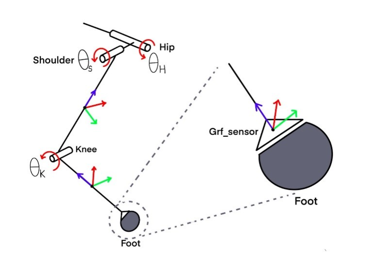
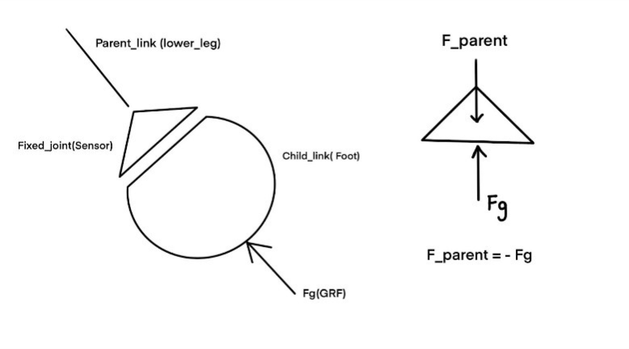
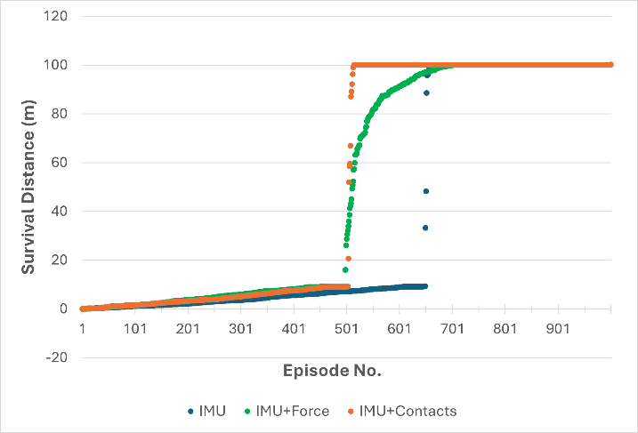
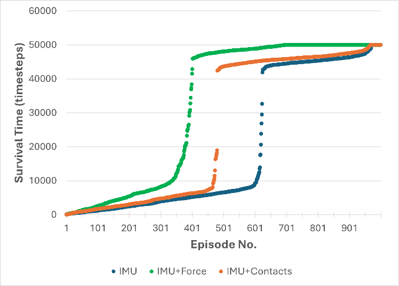

MINImal Robot Dog


Inspired by SpotMiniMini's work on RL trained policies using only IMU, I wanted to explore the effect of ground reaction forces and contact sensing within a linear policy. My goal was to maintain low-cost robotic hardware while enabling the robot to handle terrain sensing autonomously.
Emulating Force sensors
Enabling force sensing in simulation was kind of tricky, so I used Pybullet joint state sensor to essentially emulate a force sensor. The lower leg has a small foot attached to its end with a fixed joint. I wrote a function which fetched the joint state for this joint at each simulation step, which included the “joint reaction forces”. The foot is small enough that moments due to the ground reaction force can be ignored, so the joint reaction forces can be directly used to closely approximate ground reactions.

Using rotation transforms, these forces are then converted from the joint frame to the robot frame. From there, it was a simple matter of using a threshold function to emulate a contact sensor: any force greater than the threshold value was treated as “foot in contact with ground”.

Training
All three robot policies IMU, IMU+Contact and IMU+Force were trained on a higher and randomized terrain. The observation space for force policies consists of 24 inputs whereas IMU+Contacts - 16 inputs and IMU - 12 inputs.

Performance Testing


Survival Data - Distance and Time
To compare the policy performance, I created a terrain randomized simulation environment to test the survival distance and time of an agent chosen from each set of policies. The robot was allowed to walk a distance of 100 m in 50000 simulation timesteps, without falling. I saw a huge increase in performance going from IMU to either IMU+Contacts or IMU+Force. The scatter plots below show the distance covered and the survival time of an agent in an episode. The data was sorted in ascending order for clarity. There are a larger number of contacts-based policies that walk a longer distance, while a larger number of force-based policies survive for a longer time. This led me to believe that force-based policies would cause the agent to get stuck at a point in the terrain, unable to walk further. Overall, I observed that force based policies prioritized robot stability, while contacts-based polices prioritized covering distance.
Contact Sensing


We explored various methods by which such contact estimation could be enabled. We chose FSR with a small form factor (10mm X 20 mm) and a force sensing range of 0.2N to 20N. The FSR is sandwiched between the lower-leg and foot of the robot. The lower leg and foot are separated by 4 silicon O-rings when assembled. When the foot contacts the ground, the O-rings are compressed and the cylindrical boss of the foot applies force on the FSR, decreasing its resistance. When the foot breaks contact with the ground, the O-rings decompress, causing the foot to return to its original position. The force applied on the FSR is decreased, increasing its resistance.
We use a voltage divider circuit to convert the varying resistance value to a voltage value, which is then read by a microcontroller.


Hardware
Soldered a custom power distribution board for wiring 12 servo motors, a Teensy 4.1 and RPI 4b and IMU